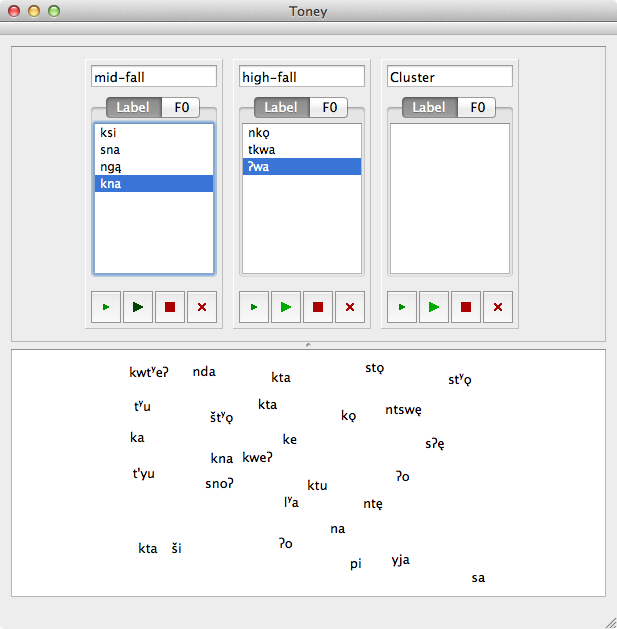

Toney is a tone classification tool. Use it to listen to and view F0 contours, and manually sort wordforms or phrases into clusters. It requires a specially formatted TextGrid file and a corresponding audio file. Samples are provided below.
Use the File menu to open TextGrid file(s). Double-click on a word to hear it. Use the Edit menu to add a cluster, then drag items from the scratch area (bottom of screen) to a cluster, or between clusters. See the Help menu for more user documentation.
Toney is open source software. Please submit any bug reports via the project development page at GitHub: https://github.com/langtech/toney.